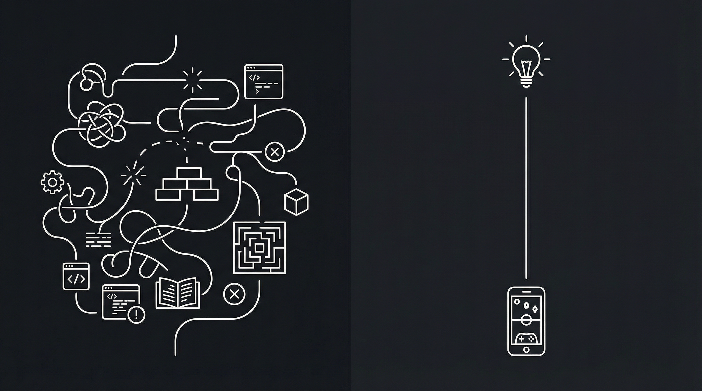
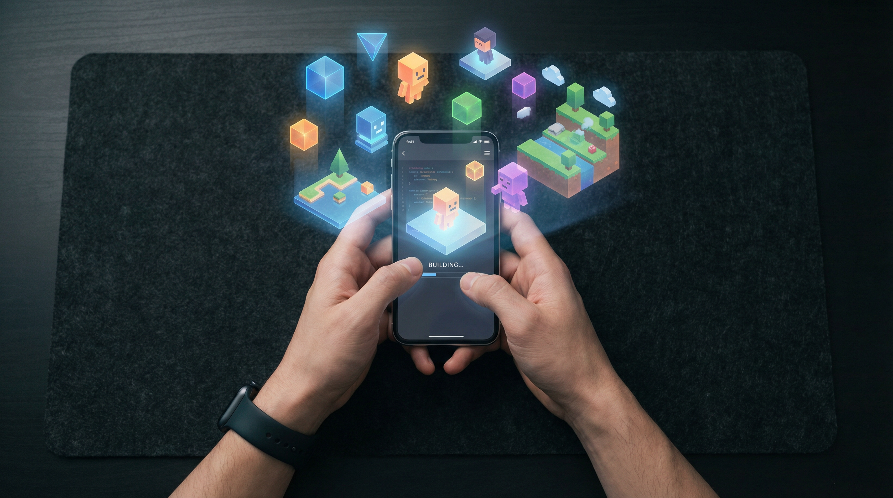
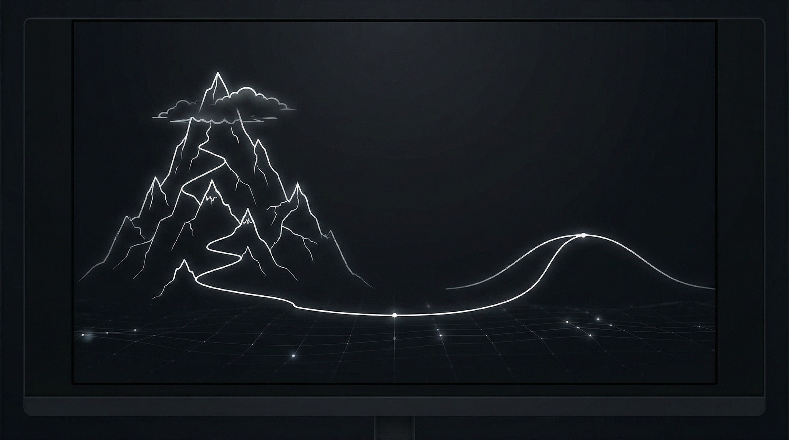

Let me be honest with you. I wasted six months of my life trying to learn Unity the "right way." And I have nothing to show for it except a folder full of half-finished tutorial projects that I'll never open again.
I'm not here to bash Unity. It's a powerful tool. Professional studios use it. Indies have shipped incredible games with it. The problem wasn't Unity.
The problem was me thinking I needed Unity in the first place.
The reality
Tutorial hell is real. I lived there for 6 months.
How it started
I had this game idea. Simple, really. A maze game where gravity shifts when you tap the screen. Nothing crazy. I could see it clearly in my head—the smooth physics, the way the ball would roll, the satisfaction of solving each level.
So I did what everyone tells you to do: I googled "how to make a game."
Every result said the same thing. Learn Unity. Or Unreal. Or Godot. Pick an engine, watch tutorials, practice for a few months, and then—eventually—you'll be ready to make your actual game.
Seemed reasonable. I downloaded Unity.
The interface looked like a spaceship control panel designed by someone who hates humans.
But I stuck with it. Bought a course. Followed along. Made a cube move across the screen. Felt like a god. Then tried to do something slightly different from the tutorial and everything broke.
So I watched another tutorial. And another. And another.
The numbers that broke me
After six months, here's what I had accomplished:
Zero. Not one game that was actually mine. Just clones of whatever the tutorial was teaching. Flappy bird clones. Platformer clones. Pong clones. But that gravity maze game I actually wanted to make? Still just an idea in my head.
And here's the thing that really hurt: I spent probably 200+ hours on this. That's a part-time job. Five hours a week for almost a year. And the result was... nothing I could show anyone.

The choice
There's more than one path to the same destination
The uncomfortable truth about "learning to code"
We've been sold this idea that coding is the only "real" way to make things. That if you're not writing C# or JavaScript or Python, you're somehow cheating. That no-code tools are for people who aren't serious.
But think about it. Do photographers need to build their own cameras? Do musicians need to manufacture their own instruments? Do writers need to code their own word processors?
Of course not. Tools are meant to get out of your way so you can create.
The goal was never to learn Unity. The goal was to make a game. I had confused the tool with the outcome.
Here's what nobody tells you: For most people who want to make games, learning a full game engine is like learning to build a car when all you wanted was to drive somewhere.
Don't get me wrong. If you want to become a professional game developer at a studio, yes, you probably need to learn these tools. If you're building something that will take 3 years and need custom shaders and complex AI behaviors—sure, Unity or Unreal makes sense.
But I wasn't trying to make the next Elden Ring. I just wanted to make a fun little gravity maze game and maybe share it with my friends.
What changed everything
In late 2025, I stumbled across something called "vibe coding." People on Twitter were posting about making apps and games just by describing what they wanted. At first I thought it was a meme. Or some overhyped tech demo.
But I tried it. I opened an app called VibeBrews and typed: "A 3D maze game where gravity changes direction when you tap the screen."
Ninety seconds later, I was playing my game.
The shift
It wasn't perfect. But it was real. And it was mine.
I'm not going to lie and say it was exactly what I imagined. The first version was rough. The physics were a bit floaty. The maze was too easy.
But here's what mattered: I could play it. Right then. And when I wanted to change something, I just... said what I wanted to change.
"Make the ball heavier. Add a timer. Make the walls glow when you're close."
Each change took seconds. Not hours of debugging. Not googling "NullReferenceException unity" for the hundredth time. Just... making the game better.
In one afternoon, I made more progress on my actual game idea than I had in six months of tutorials.

Building
Ideas become playable in minutes, not months
But isn't this cheating?
I asked myself this too. Old me would have looked at AI-assisted game creation and thought "that's not real game development."
But what is "real" game development? The thing that matters is the game. The experience someone has when they play it. The smile on your friend's face when they try your creation. Not what tools you used behind the scenes.
When Instagram launched, photographers complained that filters were "cheating." When synthesizers became popular, traditional musicians said it wasn't "real music." When digital art tools emerged, painters said it wasn't "real art."
Every new tool that lowers the barrier to creation faces the same resistance. And then the world moves on and we get more creators, more variety, more creativity.
I'd rather be someone who makes things than someone who gatekeeps how things should be made.
What I actually use now
These days, when I have a game idea, I open VibeBrews on my phone. I describe what I want. I play it within a few minutes. If I like where it's going, I refine it. If not, I try something else.
In the last two months, I've made more games than I did in my entire six months of Unity tutorials. A racing game with shopping carts. A puzzle game where you connect colors. A simple shooter my nephews love playing when they visit.
Are these games going to win awards? Probably not. But they exist. People play them. And I actually enjoy the process of making them.
That's worth more to me than any amount of "proper" game development knowledge I could have accumulated.

Perspective
The learning curve doesn't have to be a cliff
Who this is (and isn't) for
Let me be clear about something. I'm not saying Unity is bad or that everyone should stop learning traditional game development.
If you genuinely enjoy programming—if writing code and debugging and optimizing is fun for you—then by all means, learn Unity or Unreal or Godot. Those are incredible tools with decades of wisdom baked in.
If you want to work at a game studio—most still require traditional skills. AI tools are changing the industry, but not that fast.
If you're building something highly specific—a AAA-quality game, something with custom physics engines, procedural generation systems—you'll probably need more control than AI tools currently offer.
But if you're like me—someone with ideas who just wants to make those ideas real and playable—there's now a faster path. And ignoring it because it doesn't feel "legitimate" is just leaving your ideas on the table.
The future is weird
A year ago, if you told me I'd be making games by talking to my phone, I would have laughed. Now I do it every week.
I don't know what this space will look like in another year. Maybe AI tools will get so good that traditional engines become niche. Maybe there will be a backlash. Maybe both will coexist, each serving different needs.
What I do know is this: the best tool is the one that helps you create. For some people, that's Unity. For others, that's GameMaker or Godot or Construct. For me, right now, it's AI-powered creation on my phone.
And honestly? I've never been happier with my hobby.
Tomorrow
More creators. More games. More ideas becoming real.
If this resonates with you
Maybe you're stuck in tutorial hell right now. Maybe you have a folder full of half-finished projects. Maybe you have game ideas that have been sitting in your notes app for years because "someday" you'll learn to make them.
I'm not going to tell you what to do. But I will say this: there's no rule that says you have to suffer before you're allowed to create. There's no minimum hours of struggle required before your ideas deserve to exist.
Your game idea is valid. And maybe—just maybe—it doesn't need six months of preparation to become real.
It might just need ninety seconds and the right tool.
Ready to try a different way?
Skip the tutorials. Make your game idea real in the next 5 minutes.
Download VibeBrews Free